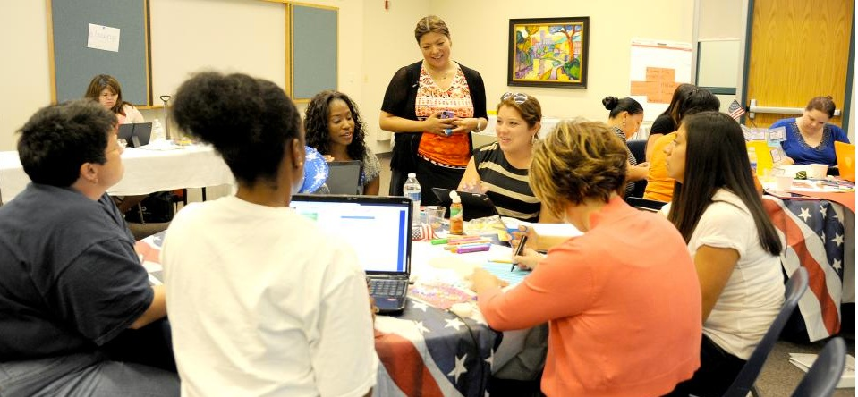

13.5 Docência em equipe



Não se identifica uma solução simples para o desafio de reduzir as turmas a dimensões que assegurem o desenvolvimento de competências para a era digital em todos os estudantes. Alex Usher, no seu blog One Thought to Start Your Day, analisa diferentes metodologias de distribuição de carga horária letiva com impacto na dimensão das turmas. Contudo, a carga letiva é regulada a nível de departamento acadêmico, deparando-se o docente com escassa autonomia sobre a dimensão da turma que lhe é atribuída.
Independentemente do design letivo adotado — presencial, híbrido ou on-line —, a presença de turmas numerosas limita o âmbito de atuação pedagógica. Revela-se complexo promover competências cognitivas de nível superior (pensamento crítico, resolução de problemas e trabalho colaborativo) em turmas sob formato de massa. Contudo, mapeiam-se abordagens com resultados satisfatórios no redesenho destas disciplinas propedêuticas de grande escala (1.000 ou mais alunos) recorrendo ao ensino híbrido. Ver, por exemplo:
- o processo de redesenho de disciplinas do National Center for Academic Transformation;
- o modelo da disciplina propedêutica de psicologia da Universidade McMaster;
- a disciplina on-line de anatomia com grande volume de inscritos da Universidade Dalhousie.
Apresenta-se uma proposta de design letivo orientada a promover competências complexas em turmas de grande escala:
- constituir uma equipe multidisciplinar para o planejamento, desenvolvimento e lecionação da disciplina: a equipe integrará um professor catedrático, quatro assistentes de ensino (monitores/TAs), um designer instrucional e um designer de internet/multimídia para o suporte técnico inicial;
- o professor catedrático assume a função de consultor e coordenador pedagógico, sendo o responsável pelo design global do curso, pela seleção e orientação dos TAs e pela definição dos critérios, parâmetros e instrumentos de avaliação, em coordenação com os demais elementos da equipe;
- a totalidade dos conteúdos teóricos é disponibilizada on-line no LMS em formato multimídia (vídeos de curta duração e textos dirigidos), recursos produzidos antes do período letivo pelo professor em articulação com o designer instrucional e assistido pelos TAs;
- exercícios com correção automatizada no LMS avaliam a compreensão dos estudantes e fornecem feedback pedagógico imediato; um exame eletrônico ao término do semestre assegura a classificação individual de aproveitamento do aluno;
- os estudantes são distribuídos em turmas de tutorias de 33 alunos, assumindo cada TA a responsabilidade pedagógica por oito grupos de tutorias, perfazendo um rácio de 250 estudantes por monitor;
- cada TA atua como canal de comunicação cotidiano e direto para os 33 alunos integrados nas suas oito turmas de tutorias;
- cada grupo de tutoria de 33 estudantes é subdividido em cinco subgrupos de 6 a 7 alunos para o desenvolvimento de dois projetos semestrais. O primeiro projeto tem fins formativos (sem classificação final) assente na avaliação de pares (peer review) regulada por parâmetros definidos pelo professor catedrático. O segundo projeto é avaliado pelos TAs (aproximadamente 40 trabalhos por monitor) sob rubricas de avaliação estruturadas pelo docente responsável. Os projetos visam treinar competências de pensamento crítico, resolução de problemas e cooperação em equipe;
- os estudantes dos subgrupos realizam tarefas colaborativas em reuniões presenciais ou em fóruns de debate digitais do LMS, conforme conveniência. Os fóruns virtuais contam com mediação básica dos TAs para garantir o alinhamento com os temas científicos e o respeito mútuo, remetendo-se pendências graves para decisão do professor catedrático;
- os TAs classificam os trabalhos de grupo sob as rubricas de avaliação recomendadas, sob supervisão e calibração periódica do professor catedrático. A classificação final do estudante concilia a nota do trabalho de grupo (50%) com a nota obtida na avaliação individual automatizada do fim do semestre (50%);
- o professor catedrático reúne-se semanalmente por uma hora com diferentes turmas de tutorias de 33 alunos, em formato presencial ou síncrono digital. Desta forma, assegura-se que cada estudante disponha de no mínimo uma hora de interação direta com o professor catedrático ao longo do semestre letivo. As sessões incidem na discussão de temas complexos e na monitorização do desenvolvimento das competências visadas.
Independentemente das particularidades do design instrucional adotado, as disciplinas de grande escala demandam modelos de viabilidade financeira que definam o orçamento global do curso, contemplando os custos dos assistentes de ensino associados ao volume de inscritos, com autonomia para o docente responsável gerir a alocação destes recursos. Os TAs devem frequentar ações de capacitação sobre mediação digital, responsabilidades e avaliação, com a devida remuneração complementar.
Recomenda-se, prioritariamente, desenhar a organização curricular de modo a evitar a existência de turmas de massa. Contudo, a premissa da docência partilhada em equipe deve ser considerada para qualquer disciplina com lotação superior a 30 estudantes.
Referências
Sana, F. et al. (2011) A Case Study of the Introductory Psychology Blended Learning Model at McMaster University The Canadian Journal for the Scholarship of Teaching and Learning, Vol. 2, No. 1
Usher, A. (2019) Managing Class Size One Thought to Start Your Day, Higher Education Strategy Associates, September 18
Atividade 13.5 Desenhando uma proposta de docência em equipe
- Assuma que é o docente responsável por uma disciplina com 1.600 estudantes inscritos. Dispõe de recursos orçamentais para contratar dois professores adjuntos e seis assistentes de ensino (TAs). De que forma desenharia a estrutura da disciplina?
Esta atividade destina-se a fins de reflexão individual, não contando com feedback associado.